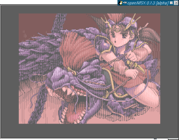

openMSX - the MSX emulator that aims for perfection
openMSX is alpha software and currently only intended for developers or experienced users.
Links
project summary (SourceForge)
openMSX doxygen generated annotated source
openMSX manual, explaining how to download, compile, install, config and run openMSX (read this if you'd like to try openMSX!)
Downloads, officially released versions of openMSX for download (now including Win32 binary release!)
CVS source snapshot, an automatically generated snapshot of the source code as it resides in CVS. For bleeding edge testers who don't have CVS access. It is regenerated for every new version of the ChangeLog
Looking for a graphical launcher? There is no official one yet, but you can get two unofficial versions of openMSX Catapult: for Linux (by Manuel Bilderbeek) and for Windows (by Herman Oudejans). We're planning to develop an official (unified) Catapult in the near future.
openMSX4Win32, Reikan's page on which you can get unofficial, experimental Win32 binaries if you are a tester; normal Win32 binaries can be download from our Download page
Features
Here are some highlights of the features of the latest release (0.3.3):
General
- New! next to the source code, also Win32 binary available
- New! manuals online and in distribution
- Unique! `real time timing', using the specially developed EmuTime model
- more than 45 MSX machine hardware configurations included (including two using C-BIOS; the others need original MSX ROMs)
- more than 20 MSX extension hardware configurations included (may need original ROMs)
- Unique! pixel accurate rendering: horizontal screensplits are rendered almost correctly (Unknown Reality, Verti-demo)
MSX hardware emulated
- almost all MSX systems, except for some specialistic details
- almost all known cartridge mapper types via autodetection or the included ROM database, including
- Unique! Panasonic FS-CA1 MSX Audio
- Unique! National mapper type used for internal software
- Panasonic mapper type used for internal software (e.g. MSX-View)
- ROMs with special headers or which start from basic, like Nausicaa, Pairs, etc.
- all (?) ROMs with SRAM (Hydlide 2, Xanadu, many Koei games, Daisenryaku, etc.)
- Cross Blaim
- R-Type
- Harry Fox Yuki No Maou-Hen
- Korean multi-game ROMs: Zemmix 126, Game's 80, Zemmix 64 and MSX90-collection
- almost all MSX sound devices:
- Cool! Moonsound (may not be 100% complete)
- Konami's Majutsushi and Synthesizer DAC
- Cool! "Moonblaster Stereo": MSX Music on one channel, MSX Audio on the other
- SCC and SCC+ (the latter can be used in SD-Snatcher, Snatcher, expanded (128kB RAM) or mirrored (64kB on both banks) mode)
- Unique! SIMPL/Covox (sound via the printer port)
- New! MSX-MIDI (turboR)
- Unique! PCM output (turboR)
- New! PCM input (sampling) for turbo R via a .wav file
- many MSX storage (disk/SRAM) systems:
- MegaRAM (non-diskROM types)
- Unique! PAC (Panasonic SW-M001)
- MSX-DOS2
- Unique! Sunrise IDE interface with harddisk
- floppy disk controller (WD2793 and National MB8877A fully supported, including formatting); also partial support for TC8566AF and Microsol based FDCs
- Unique! interlacing, real or deinterlaced
- overscan
- kanji JIS ROM 1 and 2
- Unique! MSX Bunsetsu Henkan Jisyo ROM (National FS-SR021/FS-4000/FS-4500/4700F)
- Unique! 12×12 dot kanji (National FS-4600)
- mouse and joystick (with option to use the keyboard as joystick)
- Unique! JoyNet (experimental; connected to TCP/IP of host OS)
- tape via CAS and WAV files (real recorded tape image); CAS files can be converted to WAV on the fly, cassette sounds are audible, cassettes can be rewinded and forced to play (like unplugging the 'remote control' plug on a real machine)
- New! MSX RS-232 (8255 UART)
- New! joystick emulation for mouse (a feature that the Philips SBC-3810
and Sony MOS-1 and similar mice have)
Emulator extras
- Unique! XML files specify the hardware to be emulated, so you actually emulate specific MSX machines, which of course can be modified
- various screen renderers available:
- 640×480 hi-res renderer
- 320×240 lo-res renderer (with compensation for lower resolution by blending)
- Cool! 640×480 openGL based renderer that makes advantage of hardware acceleration of video cards and has some special effects: scanlines, blurring, afterglow (TV emulation, see also screenshots below), gamma adjustment
- Unique! console with alpha-blended background and file and command completion
- option to run at maximum possible speed
- full screen rendering
- (auto) frameskip
- Unique! support for .xsa (compressed) diskimages
- speed setting (in percent)
- mouse cursor grabbing, for windowed mode
- New! tunable volumes and channel modes for the individual sound chips, from the console
- New! debug device: write data to special I/O ports and its get logged
to stdout or a file in a format you specify. Very useful if you develop
MSX assembly programs in openMSX
- New! all read-only input files (ROM images, disk images, background pictures,
XML) can be gzipped or zipped and will be transparently decompressed
by openMSX. Note that some games require write access to their disk in
order to run (for example, Seed of Dragon)
- New! dir-as-disk feature: a directory can be specified instead of a disk
image and the contents (up to 720K) will show up as files on the MSX.
There is no support for subdirectories (as used by DOS2) yet. Note that this feature
is still experimental
- New! adjustable keymap (e.g. for Japanese PC keyboards or to use Russian MSX
keyboards on a US English PC keyboard)
- Jarek Burcynszki's YM2413 core can be chosen as alternative for the Otazaki core
Here are some highlights of features and improvements that are already in CVS and are likely to be in the next release:
- rensha turbo auto fire support
- command interface via stdin: you can now control openMSX with any external application that can write to the stdin of openMSX! An example implementation is available
- turboR pause (button) support
- most FDD LEDs are emulated
- hq2x, 2xSaI and scale2x scaler for SDLHi (see the animated pictures below)
- scanlines for SDLHi
- even more complete console (e.g. alias command)
- console commands to enable demo play with timers
- MSX can now be powered off, showing a 'noise' effect
- double buffering for SDLHi/SDLLo, should improve performance on Windows especially
- added possibility to use no renderer
openMSX IRC channel
On the server irc.freenode.net you can find the channel #openMSX where you can chat about openMSX. Often, you can also find developers on that channel.
openMSX cd
On the MSX fair in Bussum of 2002, a self-booting cd was released that can run on many computers, independent of the OS installed on them. This cd was created to demonstrate openMSX to people who do not have Linux installed or who do not or can not download and build openMSX. More information about it will be added here later.
Screenshots
Click on an image to enlarge
|

Nemesis 3 stage 1 end boss
|

Intro screen of Nemesis 1 rendered by AAlib
|
|

Undeadline Title
|

Space Manbow
|
|

Sand Stone
|

Ark-A-Noah (overscan 224 lines)
|
|

Unknown Reality title ((de-)interlaced and overscan)
|

Unknown Reality, real time scope part (horizontal screen split)
|
|

Metal Limit, Copper Shock II, with alpha-blended console
|

IDEFDISK running in DOS2 with openMSX virtual Sunrise IDE interface and harddisk
|
|

Internal software of Panasonic FS-A1GT (_MWP)
|

WordPro III, internal software of National FS-4600F
|
|

MSX View demo of Panasonic FS-A1GT
|

The Swiss Demo (with screen 12 image on Panasonic FS-A1GT)
|
|

|
|

The Maze of Galious (top) and Usas (bottom), showing the different scalers that are currently implemented. More examples can be found on MSX.vampier.net.
|
|

A shot from the
demo of Space Manbow, on the left with effects turned off and on the right
with the default scanlines and blur. (SDLGL renderer only!)
|
|

More info about the possible implementations of interlaced screens
(screen 7 interlaced picture from the demo Calculus)
|
|
|

|